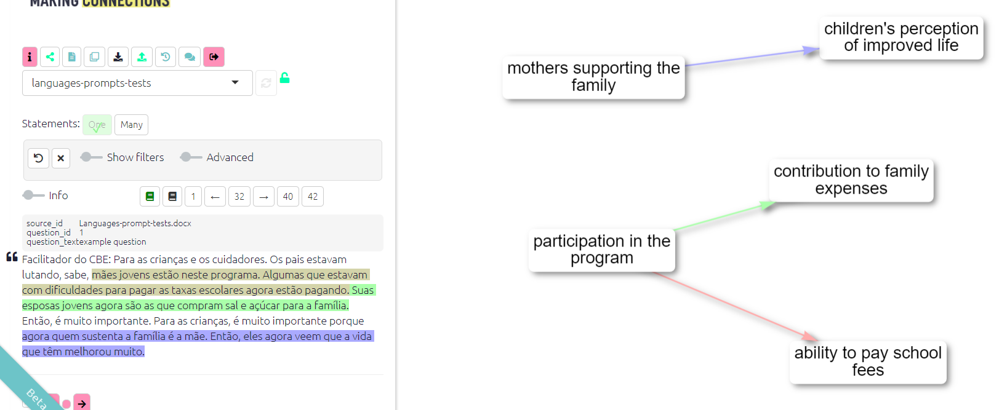
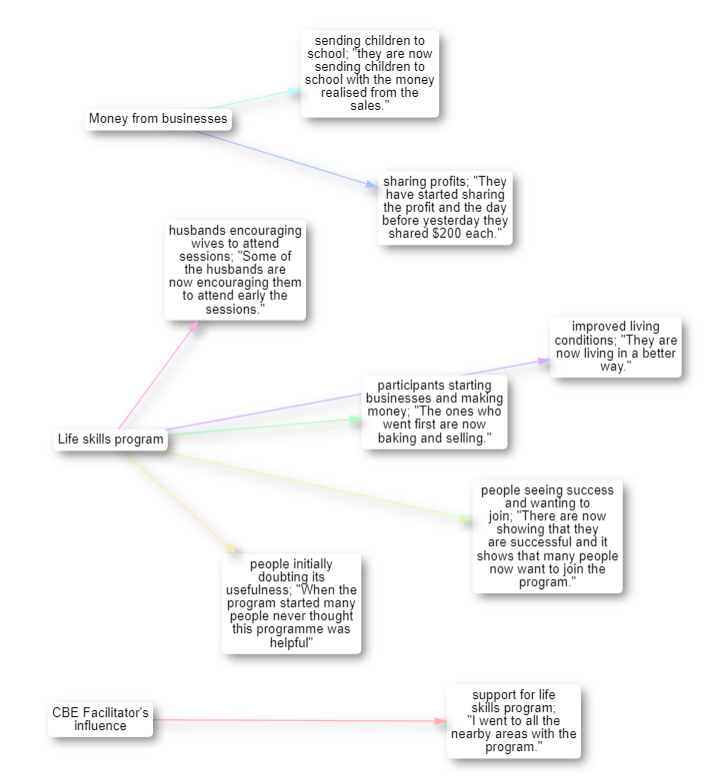
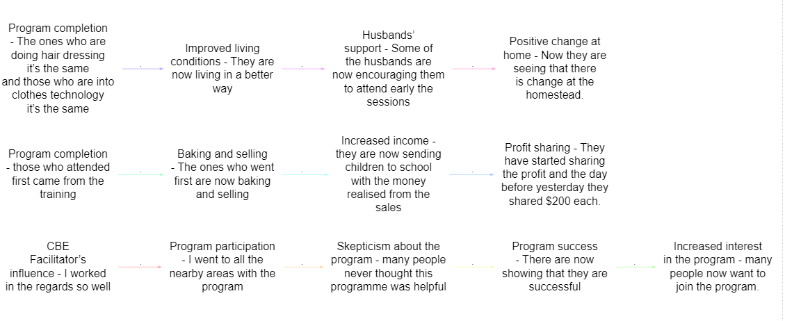

Auto-coding using AI
This exciting new possibility to do auto coding at Causal Map.
Live on Tokyo. It’s visible only to people who are hard coded as admins at the moment.
Auto coding is a new tab. The UI is not terribly sophisticated at the moment, but I’m not going to spend too long working on it. Until we’re sure how we think this should all work.
You can do already some production level coding using it with a relatively small amount of human tweaking.
If you’re new to the AI world, it’s worth taking a look at this link, where you’ll find general tips for writing prompts.
Languages
When using statements in a language other than English, ask the AI to translate them. Otherwise, if you don’t put any instructions for translating the statements, the AI highlights the statement but doesn’t show the factor labels and links in the map.
You can use a prompt like: ‘If the text is in a language other than English, be sure to translate it to English when creating the factor labels’.
{width:650}
It isn’t cheap
The big caveat is it’s not cheap because when using GPT-4. There is a switch for this.
If using GPT-4, work on small files to start with.
If the batch is very large, the app switches to a 32K model which is even more expensive per character.
The coding prompt
The default prompt is a sort of generic prompt, which gives instructions to chat GPT API to recode the file in a very generic way.
Even this generic way works quite nicely.
Identifying links
You can provide any prompt you want and this will be applied to currently visible statements. BUT in order to actually identify links (which is the whole point), the output needs to include at least some lines including the “>>†symbol, which we call the “double-arrow”.
Each line of the form X >> Y will be converted to a link from X to Y.
Each line of the form X >> Y >> Z will be converted to two links from X to Y and from Y to Z, and so on. And we call this kind of display ‘chains’
Choosing between single links (A>>B and B>>C) or chains (A>>B>>C):
GPT 3.5 doesn’t do a very good job with chains, so make sure when using GPT 3.5 to ask for single links.
- Single Links: If you’re looking for more details, the single links are the way to go: the AI can find more details and factors when looking at each link individually
{width:650}
Chains: If you want to look at the bigger picture, chains do a good job. Sometimes the bot can ignore one or another causal link, so make sure you always check your map after coding.
{width:650}
Limitations about chains:
- Conjunctions are hard to deal with when you have chains
- If using examples, make sure when putting the quote in the example, DO NOT use the “, because the AI gets confused.
- It can get harder to give more complicated examples with chains
Ensuring quotes are provided
So all of our approach is about making sure that there’s always quotes and evidence behind the causal links that we’re identifying. So you could just say to chat GPT, please find some kind of causal map based on this entire set of transcripts. And it would come out with something probably quite good, but you wouldn’t know what its evidence was for each of the different links. It would just do its own thing. That’s not really scientific and I’m not sure that as evaluators you could really justify doing that.
What we want is always to have evidence behind each each of the causal links that it finds, which we do with the prompt.
We have two ways to do this, two styles, ways of telling the AI to print out the coding that it’s found.
Colon style
We ask the AI to name the from_quote and the to_quote after the from_label and to_label, separated by colons.
The app then calculates the entire quote using fuzzy matching.
Slash style
We ask the AI to give us the whole quote at the end of the line, separated by four slashes.
In this style, it is easier to specify how to work with longer chains rather than individual links. And it is required when you send several statements in one batch.
Limitations
Prompts can only be used to add information to factor labels, not link fields like the “hashtags†field.
Other information like quickfields e.g. increased yields time:2013 and other factor tags are part of the factor label and so in principle can be added to the prompt. But we haven’t tried that.
Consistency across factor labels
To improve the consistency of factor labels, several approaches can be considered:
- Preferred Factor Labels: give the AI a list of preferred factor labels, along with examples to clarify their usage.
- NER: you can do a kind of Named Entity Recognition - at the level of entities (eg people, places, organisations), giving it a vocabulary - words and phrases to recognise, not necessarily factor labels.
- Social Science Type: suggest to the AI to use a common “social sciences†vocabulary like:
- presence of resources
- lack of resources
- more/better income
- more/better motivation
- more/better support from peers
- … also use ~ for contrary factors
The prompt library
There are other prompts in this prompt library.
Basic prompt.
Social science prompt. Similar, but it’s also got the idea of a high-level concept and a mid-level concept. And it also suggests using kind of more better, less worse kind of coding in terms of resources. You can imagine like resources, motivation, success.
Resilience, those kinds of things have been kind of quite high-level concepts, which you want the AI to recode into.
And if you then click on an example prompt, the actual prompt itself is inserted in the coding prompt box.
If also when you mouse over them, as I said, you can click on them to see exactly what’s going to happen.
All your previous prompts are listed, which have been used on this file, or which you have maybe used on some other file.
It’s also useful to see exactly what was how this file has been processed in the past.
You can also delete previous prompts.
Auto coding: Clicking “Go”
Coding changes the file.
It makes a new version of the file with some or all of the statements coded or recoded. So you might consider making a copy of a file first that you’re working on and then working on the copy. Of course, you can always restore an earlier version using the versions feature.
The also recoding or coding works on all the statements which are currently visible in the map. So right now there are nine statements in this file altogether.
Auto coding always only works on the active statements, the ones whose links are displayed in the current maps.
So if we switch to one we’ll see that just only this statement one would be also recoded or we could say, for example let’s focus on all the statements which are between one and three. So this way we should see that one, two and three will be listed in the pink bar.
So this way it is easy to use the existing filters functionality to code say all the men over 40 from village X.
As you will frequently want to simply look at, say, all the statements up to statement 20, this kind of filter can be useful.

There is already some coding in this file. But anything we do now would overwrite the recoding for those three statements.
Coding many statements is done in parallel, so coding a whole file takes longer than just a few statements but not as much as you’d expect. It does quite a lot of work in the background to make sure that all of those queries that are being sent in parallel are all kind of dealt with nicely.
And you’ll see in a minute it says, so it’s added to a couple of factors and removed a couple of links because we were already, there was already some coding there.
You might then want to go through the links one by one.
Batches / all at once
At the moment, each statement his treated as a separate chunk for processing unless you flip the slider to process all statements at once.
The concept of statement and where the statement breaks are is very important because the AI processes each statement separately in a separate process. So it has no idea what’s the other statements look like or what solutions it’s found for the other statements. It won’t necessarily use the same labels, for example.
If you press the button to process all at once, you glue all the active statements together and send them all up.
And then the AI looks over all of these maybe five or five hundred pages of text. And then provides provides coding all at once.
It has to use slash style in order to tell us exactly where it’s found each of those causal claims.
Now you would imagine this naively might work better because it’s got the app has got the opportunity or the AI has got the opportunity to look over.
In practice this needs some more experimentation. I’ve. I’m not that pleased with the results. It tends to be sort of more global in the way it approaches things.
Inspecting and improving coding
This panel can be useful to check the progress of your coding. Green is good!
First, you want to check that your initial prompt is doing the low-level, the grunt-level stuff:
- is it actually finding the right sections of the text?
- is it providing suitable factor labels for each claim?
Tagging statements as examples
I’ve now finished recoding this just exactly the way I want it. I will then label this one as as well.
I toggle the info toggle and in the statement memo box I put the word !EXAMPLE. And that’s kind of a bit crude, but it’s nice because it uses the existing functionality of the statement memo.
And if you add that to one or more statements, I don’t suggest doing it too many, then it will treat those particular statements that you’ve marked in that way as a kind of template for how to do coding.
Then press the button to add an additional piece to the prompt, which tells it to do exactly what you did in this particular statement.
If you do this, make sure your examples are consistent with the rest of the prompt; for example, they use any factor labels which you s.
Clustering
Especially when we submit statements separately (but in parallel) to be coded, which is the default, we’ll find that, for example, we might have things like a label, covid and another label pandemic, for example, and obviously, they’re talking about the same thing.
So we want to tell it: Now, please look at some of these most important things and kind of cluster them together.
And the question is then, how do we do this clustering?
We have two ways. Both can be used iteratively.
Getting help with clustering
To get AI help in finding clusters, press this button and it’ll go through all of the factors that are currently in the file and find some that are nearly synonyms.
TODO: distinguish better between hierarchies.
This clustering prompt itself can be tweaked. You can give it some sensible suggestions for labels before you even start.
Note we don’t want to cluster just things that are a similar theme but near synonyms. This phrase seems to be very good to get good clusters but you can change this prompt if you want.
Once you’ve done this, output panels become visible, including the clusters it found and a recodes table.
The cluster recodes it suggests are then attached to the file and area available to the recode factors filter.
Clustering 1) Providing clustering suggestions for the prompt
We identify clusters either manually or using the AI and go back to the and tweak the original prompt simply to suggest factor labels it might like to use and then recode the active statements again.
So this approach does recode the file, or parts of it.
Then once you have decided on your preferred labels, with the help of the AI or not, we add something to the recoding prompt
Importing from StorySurvey
See this page.